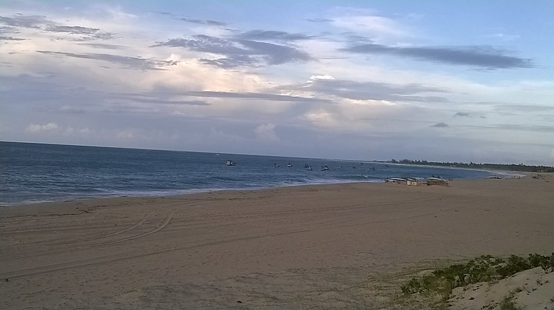

Hi, names Chris. Broadcasting from another planet called Wyoming. Pretty cool, right? Anyway, I've got these powers that let me warp anything into any shape or form I want. Wanna hear more? Check out the other pages for the rest.

Just some other information that you should know: My right arm is a little longer than my left, which doesn't really help when it comes to doing pushups. It's fun to hang off of stuff though. Really wish I could just warp my arm to normal length, but it doesn't work on living things. So that sucks.